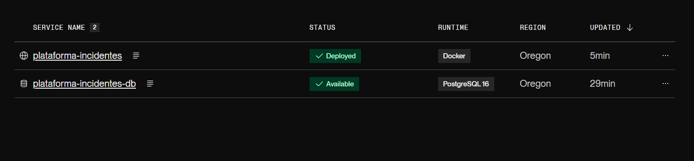

Informe técnico de integración y despliegue
Plataforma de gestión de incidentes
Arquitectura, controles de seguridad, persistencia, operación, pruebas y evidencias verificadas.
01 · Resumen ejecutivo
Propósito y alcance
La solución implementa una aplicación web para registrar, consultar, actualizar y administrar incidentes de seguridad, con autenticación de usuarios, autorización basada en roles y persistencia relacional.
El frontend estático y la API Express se entregan desde el mismo servicio. Los incidentes y usuarios se guardan en Render PostgreSQL mediante Prisma. Las evidencias multimedia se almacenan aparte en un bucket privado de Supabase Storage.
Incidentes y cuentas en PostgreSQL; listado de incidentes paginado.
JWT, verificación de cuenta activa y roles técnico/administrador.
HTTPS en Render, logs JSON por solicitud y health check con consulta a la base.
Enlaces de entrega
| Plataforma | Aplicación pública HTTPS |
|---|---|
| Repositorio versionado | github.com/davidcabezas238-droid/PLATAFORMA-INCIDENTES.2.0 · rama main |
| Commit documentado | 7648c58 · verificación de sincronización PostgreSQL |
| CI GitHub Actions | Ejecución 40129620243 · resultado success |
| Health check | /healthz · verificado HTTP 200 |
02 · Arquitectura y datos
Componentes y flujo de información
El navegador llama a la API en el mismo origen. Express enruta a controladores; el middleware valida identidad y rol; los modelos acceden a PostgreSQL con Prisma. Al adjuntar un archivo, el backend verifica el contenido y lo almacena en Supabase Storage. La descarga pasa por una ruta autenticada.
Persistencia y CRUD
| Entidad | Operaciones | Datos/control |
|---|---|---|
| Incidente | Crear, listar/filtrar, consultar, actualizar, eliminar. | PostgreSQL; listado paginado por defecto a 25 y máximo 100 por página; prioridad, estado y campos validados. |
| Usuario | Listar, crear, actualizar rol/estado y eliminar. | PostgreSQL; correo único; hash bcrypt; el hash no se expone en respuestas. |
| Adjunto | Subir y descargar asociado al incidente. | Bucket privado; ruta interna no se expone; descarga con autenticación. |
03 · Identidad y seguridad
Autenticación, autorización y validación
Autenticación
POST /loginnormaliza el correo, busca la cuenta persistente y compara la contraseña mediante bcrypt.- Las contraseñas se almacenan como hash; la política de alta admite de 12 a 128 caracteres y utiliza factor bcrypt 12.
- Tras login se emite un JWT con ID del usuario en
suby expiración de una hora. - En cada solicitud protegida se vuelve a consultar la cuenta. Una cuenta desactivada pierde acceso inmediatamente; rol y estado actuales prevalecen sobre datos antiguos.
- El administrador inicial se crea desde variables de entorno secretas; no hay credenciales predeterminadas.
Autorización
| Rol | Permisos principales |
|---|---|
| Técnico | Iniciar sesión y crear, consultar y actualizar incidentes. |
| Administrador | Capacidades de técnico, administración de cuentas y eliminación de incidentes. |
La API limita /usuarios al rol administrador. No permite que el administrador quite sus propios privilegios o elimine su cuenta; el modelo protege mediante transacciones serializables la existencia de al menos un administrador activo.
Validación de entradas y archivos
- El título acepta letras Unicode y espacios, sin números ni símbolos, con máximo de 100 caracteres.
- Prioridad y estado deben pertenecer a opciones permitidas; la descripción tiene un límite de 200 palabras.
- Adjuntos permitidos: JPG, PNG, GIF, WebP, MP4, WebM y MOV, máximo 25 MB. El servidor valida el tipo detectado del contenido.
- La API autentica descargas y evita publicar la ruta interna del objeto.
04 · Despliegue y operación
HTTPS, configuración, logs y salud
Topología y transporte
El Blueprint de Render declara el servicio Docker y el PostgreSQL administrado plataforma-incidentes-db. Render termina TLS y expone HTTPS; la aplicación escucha HTTP dentro del contenedor. Al arrancar, el contenedor aplica las migraciones con Prisma antes de iniciar Express. Supabase permanece como almacenamiento privado de adjuntos.
Configuración por entorno
| Variable | Finalidad | Tratamiento |
|---|---|---|
DATABASE_URL, DIRECT_URL | Conexión de aplicación y migraciones Prisma a Render PostgreSQL. | Inyectadas por el Blueprint; no se incluyen en Git. |
JWT_SECRET | Firma JWT. | Generada por Render. |
SUPABASE_URL, SUPABASE_SERVICE_ROLE_KEY | Acceso al bucket de adjuntos. | Configuradas como secretos del servicio. |
INITIAL_ADMIN_EMAIL, INITIAL_ADMIN_PASSWORD | Provisionar primer administrador de la base vacía. | Secretos temporales; retirar tras comprobar el acceso inicial. |
STORAGE_DRIVER, SUPABASE_STORAGE_BUCKET | Seleccionar Supabase Storage y bucket privado. | Configuración del servicio, sin credenciales. |
Logs y health check
- Los logs de solicitudes son JSON con ID de solicitud, método, ruta, código HTTP y duración; el cuerpo, contraseñas y tokens no se registran.
- Los errores incluyen identificador de solicitud y mensaje del error en los logs del servidor.
GET /healthzejecuta una consulta a PostgreSQL: responde200 {"status":"ok"}si conecta y503si falla.- Render usa
/healthzcomo ruta de comprobación del servicio.
05 · Pruebas y evidencias
Verificación final
Integración continua
GitHub Actions se ejecuta en pushes y pull requests a main. La ejecución asociada al commit 7648c58 terminó con conclusión success.
| Etapa CI | Resultado | Alcance |
|---|---|---|
| PostgreSQL de servicio | Aprobado | Base efímera para la ejecución; separada de producción. |
| Instalación y Prisma Client | Aprobado | npm ci y generación de cliente. |
| Migraciones | Aprobado | prisma migrate deploy sobre la base temporal. |
| Lint | Aprobado | ESLint en backend y frontend. |
| Pruebas | Aprobado | Pruebas automatizadas de incidentes, cuentas, autorización y adjuntos. |
Comprobaciones en vivo (24-10-2026)
| Comprobación | Resultado observado |
|---|---|
| Plataforma HTTPS | HTTP 200 Abrir |
/healthz | HTTP 200 {"status":"ok"}; confirma conexión a la base configurada. |
/login.html y /usuarios.html | HTTP 200 Ambas páginas servidas. |
/usuarios sin token | HTTP 401 Acceso rechazado correctamente. |
| Panel de Render | Captura compartida muestra servicio web Deployed y plataforma-incidentes-db Available. |
| Login administrador | El usuario confirmó previamente que inició sesión; tras el cambio debe volver a confirmar el acceso a la base nueva. |
Acceso al resultado CI: GitHub Actions run 40129620243.
Los enlaces a la documentación técnica y al manual de usuario están disponibles en la portada y en el repositorio.
06 · Conclusiones
Resultado, límites y siguientes pasos
La versión documentada está desplegada en Render y conecta con PostgreSQL: la respuesta saludable del endpoint ejecuta una consulta a la base de datos. La aplicación integra CRUD persistente, autenticación JWT, autorización por roles, validación de datos, HTTPS en el extremo público, configuración por entorno, logs estructurados y health check. La ejecución automatizada que valida instalación, migraciones, lint y pruebas terminó satisfactoriamente.
Limitaciones conocidas
- Los planes gratuitos pueden suspender o limitar recursos; la base PostgreSQL gratuita de Render expira tras el plazo indicado por Render.
- La nueva base inició vacía. No se migraron datos ni cuentas anteriores; los adjuntos preexistentes no tienen relación con registros de la base nueva.
- La demo no incluye segundo factor, recuperación/cambio autónomo de contraseña, auditoría administrativa completa ni alta disponibilidad.
- Las pruebas CI emplean una base efímera; no son pruebas de carga ni sustituyen un plan de respaldo/recuperación.
Comprobaciones recomendadas para la defensa
- Iniciar sesión con el administrador inicial de la base nueva; luego retirar las variables secretas de bootstrap.
- Registrar un incidente demostrativo y comprobar que persista tras recargar.
- Crear un técnico y demostrar que no puede ejecutar acciones administrativas.
- Subir y consultar un adjunto de prueba mediante sesión autenticada.
- Mostrar `/healthz`, el estado Live en Render y la ejecución CI aprobada; ocultar credenciales y datos personales.
Anexo A · Evidencia de despliegue
Servicio web y base PostgreSQL en Render
La captura de Render compartida para este informe muestra los dos recursos en estado disponible: el servicio web plataforma-incidentes figura como Deployed y la base plataforma-incidentes-db como Available.

Captura proporcionada por el usuario el 24 de octubre de 2026. No contiene cadenas de conexión ni credenciales.